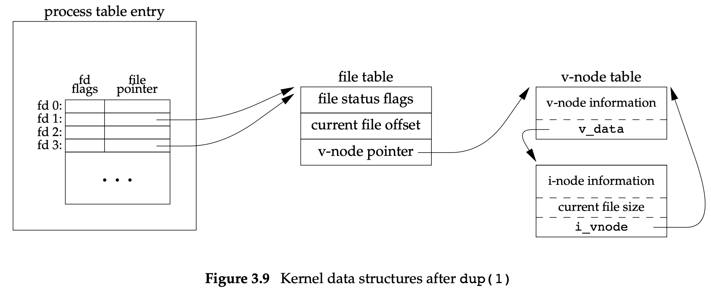

Unix-文件IO
文件描述符
本章所描述的文件 IO 函数又称为无缓冲 IO （unbuffered IO）。所谓无缓冲指的是：每次调用该函数时都会触发系统调用。
| 文件描述符 | 描述 | 符号常量 | 所在头文件 |
|---|---|---|---|
| 0 | 标准输入 | STDIN_FILENO | unistd.h |
| 1 | 标准输出 | STDOUT_FILENO | unistd.h |
| 2 | 标准错误输出 | STDERR_FILENO | unistd. |
文件描述符变化范围：0～OPEN_MAX-1
open and openat Functions
参数说明
| 参数名 | 描述 |
|---|---|
| path | 创建或打开的文件路径名 |
| oflag | 指定打开文件的权限或者属性 |
| fd | 用于打开相对路径的文件 |
参数 fd：
- 参数 path 为绝对路径，则 fd 参数将被忽略，即 openat() 与 open() 相同。
- 参数 path 为相对路径，且参数 fd 指出了相对路径名在文件系统中的起始地址。参数 fd 可以通过打开相对路径名所在的目录来获取。
- 参数 path 为相对路径，且参数 fd 指定了 AT_FDCWD 标志。此时，路径名以当前工作目录来计算，openat() 与 open() 相同。
参数 oflag 值域

返回值说明
返回打开的文件描述符，其值是最小的未使用的值。
有些应用使用这种特性来打开标准输入、标准输出、标准错误输出。（比如关闭所有文件描述符后重新打开，则会先打开 0 然后是 1 、2、…）。
openat 与 open 的不同
- openat 提供了不依赖于当前工作目录打开文件的方式
- openat 能够避免 time-of-check- to-time-of-use (TOCTTOU) 错误。
TOCTTOU 问题：当程序中调用两次基于文件的函数时，第二个调用依赖于第一个调用的结果时，由于两个调用并不是原子性的，若文件在两次调用之间发生改变，第一次调用的结果就是无效的，进而产生错误。
TOCTTOU 通常是欺骗有权程序降低有权文件的权限或者修改有权文件的权限，达到访问有权文件的目的。
文件名与路径名的截断（truncation）
当文件名或路径名的长度 >= NAME_MAX 时
- 基于 System V 标准的系统会将超过 NAME_MAX 的部分截掉，仅保留前 NAME_MAX 字节的数据。
- BSD 派生系统会返回错误，并将 errno 置为 ENAMETOOLONG。
- POSIX.1 使用 _POSIX_NO_TRUNC 来决定当文件名或路径名是否是截断还是返回出错。若 _POSIX_NO_TRUNC 有效（可以通过 pathconf() 来验证），则返回出错并将 errno 置为 ENAMETOOLONG。
若文件名或路径名的长度刚好和 NAME_MAX 相等，那么任何以路径名作为参数的函数（如 open / stat）都无法确定文件的名称，因为无法确定路径名是否被截断。
creat Function
等价于 open(path, O_WRONLY | O_CREAT | O_TRUNC, mode);
close Function
关闭文件，同时释放该文件上的所有记录锁。
当进程终止时，会自动关闭其所打开的所有文件，因此有的程序不会显式调用 close。
lseek Function
参数说明
获取当前文件偏移量
可以用来检测当前文件是否可以调用 lseek。若文件描述符是对管道、FIFO、socket 的引用，lseek 函数将会返回 -1 并置 errno 为 ESPIPE。
1 | off_t currpos; |
注意：
- 对于普通文件，偏移量是一个非负整数 ；对于某些设备，偏移量可为负。因此在判断 lseek() 执行是否成功时应该用 ==-1 进行判断，而不应该是用 < 0
- lseek() 仅将偏移值记录在内核中，执行时不产生 IO 操作
- 当偏移量设置为大于文件长度的值时，再次写入将会产生空洞。空洞中的字节将读为0。另外空洞并不占用磁盘块
空洞文件演示：

read Function
write Function
多进程之间文件共享
某个进程打开标准输入和标准输出两个文件的内部结构如下图所示：
- process table entry：存储这着本进程打开的文件描述符以及文件描述符标志（file descriptor flags，值域如下：）
- file table entry
- 文件状态标志（file status flags），值域如下：
- the current file offset
- 指向该文件的 v-node 表的指针
- v-node table entry 主要包含了文件的类型、对此文件进行操作的函数的指针；i-node 是进程打开文件时从磁盘中读取的内容，包含文件所有者、文件大小、指向数据在磁盘中的存储位置的指针…
在 Linux 中，不使用 v-node ，而是将将 i-node 分为与文件系统独立的 i-node 和依赖于文件系统的 i-node。
上述三种数据结构是进程之间共享文件的基础。

多进程打开同一文件时，每个进程都有各自的 file table entry （应为每个进程的 offset 可能不同） 但 v-node 是所有进程共有的。
某些文件操作系统调用对三种数据结构的影响：
- write：更新 file table entry 中的 current file offset 为当前值。若写入的数据量超过文件大小，则要更改 i-node 中的 current file size 。
- open with O_APPEND：文件状态标志 O_APPEND 会写入到 file table entry 中，每次写入时，file table entry 中的 current file offset 被设置成 i-node 中的 current file size。
- lseek ：只是修改 file table entry 中的 current file offset 值，并不涉及 IO 操作。
通过 fork 创建的子进程会共用父进程每个打开的文件描述符的 file table entry。
file descriptor flags 与 file status flags 的区别是：前者仅应用于单个进程的单个描述符中；后者会应用在指向该 file table entry 的任何进程的任何描述符。这两者可通过 fcntl 函数进行修改。
原子操作
appending to a file
1 | // write 依赖于 lseek 的结果，这并不是原子性的，存在线程安全问题 |
正确的追加文件内容的方法是：使用 O_APPEND 标志打开 （open） 文件，每次 write 时会以原子性的方式更改 offset 和 write。
pread and pwrite Functions
pthread 以原子性的方式从 offset 位置开始读取（不更新 current file offset）。
pwrite 同理。
Creating a File
open(O_CREAT | O_EXCL) 以原子性的方式执行 (a) 判断文件是否存在 (b) 创建文件。
dup and dup2 Functions
函数说明
用于复制文件描述符。注意这两个函数返回的新描述符都会将 FD_CLOEXEC 标志清除。
dup 函数返回的描述符是最小可用的描述符。
而 dup2 函数正常情况下返回的描述符用参数 fd2 来描述，但当 fd2 是已经打开的文件描述符时，先将 fd2 关闭，然后再用 fd2 来表示 fd 的副本。除此之外，当 fd2 == fd 时，不关闭 fd2 直接返回 fd2。
dup 与 dup2 创建的关于 fd 的副本描述符与参数 fd 指向同一个 file table entry。

dup(fd);等价于fcntl(fd, F_DUPFD, 0);dup2(fd, fd2);等价于close(fd2); fcntl(fd, F_DUPFD, fd2);dup2 是以原子性方式完成这两步操作的。
sync, fsync, and fdatasync Functions
传统 UNIX 系统实现上会采用 buffer cache 和 page cache 的机制大幅缩减写入磁盘所需的 IO 次数。操作系统通常在 这种写入方式也称为 延迟写。
为了保证缓冲区与磁盘中的数据的一致性，Unix 提供了三种符号来实现不同程度的一致性：
| 函数名 | 描述 |
|---|---|
| sync() | 将所有修改过的块缓冲区排入写队列，不等实际写磁盘操作结束就返回。update 系统守护进程周期性（30s）调用sync，冲洗内核的块缓冲区。 |
| fsync() | 针对 fd 指定的文件，同步将修改的块写入磁盘。并更新文件属性 |
| fdatasync() | 类似 fsync ，但只影响文件的数据部分，不更新文件属性 (同步更新) |
fcntl Function
参数说明
arg：一般情况下是一个整数。当用于描述记录锁时，arg 参数是一个指向某个数据结构的指针。
cmd 取值：

函数说明

返回值说明
- 出错返回 -1；
- 指定了 F_DUPFD 返回新的文件描述符
- 指定了 F_GETFD 或 F_GETFL 返回相对应的标志
- 指定了 F_GETOWN 返回进程 ID （为正数时）或 进程组 ID （为负数时）
1 | // 打印给定文件描述符的 file status flags |
运行结果：
1 | $ ./a.out 0 < /dev/tty |
1 | // 对 file descriptor flags 和 file status flags 的修改，不能简单地使用 F_SETFD 或 F_SETFL 进行设置。必须先获取到原先标志的值然后再修改成预期内容。否则会修改其他的标志位 |
val &= ̃flags; /* turn flags off */ 用于取消某个标志位的设置。
ioctl Function

本节其他函数无法实现的IO 操作都可以用 ioctl()，如终端IO操作、对磁带的操作、操作不同设备进行读写、获取/调整终端窗口的大小等
参数说明
… 表示可以传可变参数，通常是指向变量或结构体的指针。
每种设备驱动都可以定义自己的 ioctl 命令集合。操作系统也会为不同种类的设备提供通用的 ioctl 命令。如在 FreeBSD 中提供如下命令集：
/dev/fd
打开 /dev/fd/n 等价于复制描述符 n。
fd = open("/dev/fd/0", oflag);
通常参数 oflag 会被忽略。若不忽略，oflag 应是打开该描述符时的 oflag 的子集。该描述符的权限不会应为 re-open 而被改写。
【注意】在 Linux 中 /dev/fd 中的文件是其他文件的链接文件，在 open /dev/fd 下的文件时，若 oflag 为 O_CREAT 会截断链接文件所指向文件的内容。